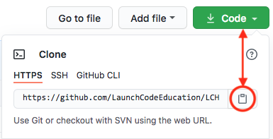
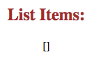
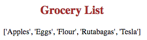

23.5. Try It! Flask Sessions¶
Let’s build a simple Flask application that uses sessions to track a list of items. It doesn’t matter what the list is (movies, groceries, places to visit, etc.). The key is to practice saving and accessing persistent data.
Note
For the program to work properly, cookies must be enabled in the browser.
23.5.1. Clone the Repository¶
The starter code for this demo is saved on GitHub. Use this link to navigate to the repository, then follow these setup steps:
On the repository page, click the green Code button and copy the URL.
Launch Visual Studio Code. From the File menu, open your
local_practicedirectory.In the terminal pane, enter the command:
$ git clone repo_URL
Be sure to replace
repo_URLwith the web address you copied in step 1.From the File menu, open the
LCHS_session_try_itfolder.Create a new virtual environment and install Flask.
Mac: $ python3 -m venv session-env $ . session-env/bin/activate (session-env) $ pip3 install Flask PC: $ py -3 -m venv session-env $ . session-env/Scripts/activate (session-env) $ pip install Flask
Launch the
main.pyprogram and open the webpage in the browser. Nothing special happens on the page yet. You just need to make sure the starter code runs.Before moving on, be sure to save and commit your work.
{kind=link}
23.5.2. Save Session Data¶
In this section, you’ll use the session object to store a piece of data.
Right now, all the Flask application does is render the index.html page.
Opening main.py, we see very little code inside the central if/else
block.
Example
The index() function in main.py:
7 8 9 10 11 12 13 | @app.route('/', methods=['GET', 'POST'])
def index():
if request.method == 'POST':
pass
else:
pass
return render_template('index.html')
|
pass is another example of a placeholder. The keyword fills the space
where Python expects a block of statements. It allows you to run the starter
code successfully and worry about filling in specific commands later.
Since your program will track a collection of items, start by saving an empty list to the session.
To set a new session cookie, the general syntax is:
session['key'] = value
Just like a dictionary,
keyshould be a string or a string variable. However,valuecan be any Python data type.In
main.py, replace thepasskeyword on line 12 with the statement:12
session['list_name'] = []
Be sure to use something more descriptive than
list_name. For example,movies,places_to_visit,groceries, etc.Save your changes. If
main.pyis not currently running, start it again.On the webpage, use the browser tools to confirm that a session cookie was set.
Congratulations! You just made the browser store a file on your device. It only contains an empty list, but you’ll soon fix that.
Note
Remember, unlike plain cookies, session values can be non-string data types!
23.5.3. Access Session Data¶
OK, you’ve saved a session file to your device. Next you’ll learn how to access that data when you need it.
To access session data, the general syntax is:
all_session_data = session
# OR
specific_session_value = session['key']
When placed to the right of the = operator, session returns all of its
key/value pairs. You can use all_session_data just like a Python
dictionary.
session['key'] returns the value assigned to key. Since the session
object can store multiple key/value paris, this syntax is helpful when you only
want one specific entry.
Now put this to use:
Open
index.htmlin Visual Studio Code.Just beneath the form code, there is a section that displays the contents of the list.
21 22 23 24
<section class="centered"> <h2>List Items:</h2> <p>Nothing here yet...</p> </section>
On line 23, replace
Nothing here yet...with a placeholder:21 22 23 24
<section class="centered"> <h2>List Items:</h2> <p>{{session['list_name']}}</p> </section>
{{session['list_name']}}returns the value assigned tolist_name.Save, then reload the page. You should see a set of empty list brackets under the form.
Return to
main.py. Instead of assigning the empty list tosession['list_name'], try assigning a list that contains one or more items. Save, then reload the page. You should see the items appear.
Notice that the render_template function does NOT include any variables.
Since the session data is stored on your device, it is accessible by both
main.py and index.html.
Tip
At any time, you can delete a session cookie using the browser tools. Open up the storage tab and right click on the item you want to remove.
{kind=link}
23.5.3.1. Update the List Display¶
To make the webpage look better, let’s update the HTML code to display the elements in an unordered list.
21 22 23 24 25 26 27 28 | <section class="centered">
<h2>List Items:</h2>
<ul>
{% for item in session['list_name'] %}
<li>{{item}}</li>
{% endfor %}
</ul>
</section>
|
The style.css page contains some CSS rules to align and size the items, but
you may need to adjust these to suit your screen.
23.5.4. Change Session Data¶
After learning how to create and access a session cookie, the next step is to learn how to change session data. That will be the goal for the next page.
Before moving on, take a moment to save and commit your work.
23.5.5. Check Your Understanding¶
Question
To add a new key/value pair to a session object, the syntax is:
-
session = {key : value} -
session['key'] = value -
value = session['key'] -
session['key' : value]
Question
Which of the following will print ONE value from the session object?
-
print(session('key')) -
print(session) -
print(session['key']) -
print(session[0])